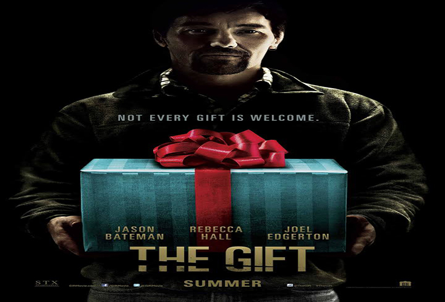
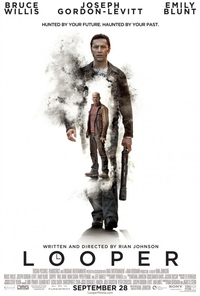
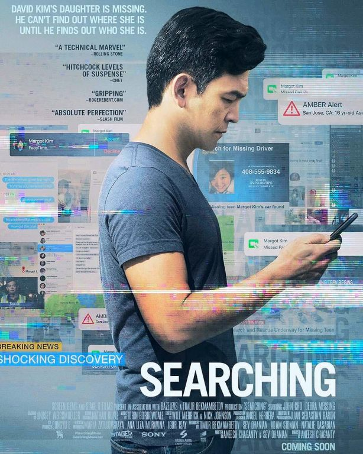
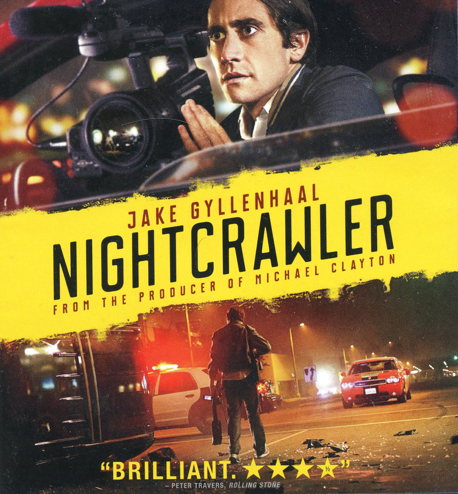
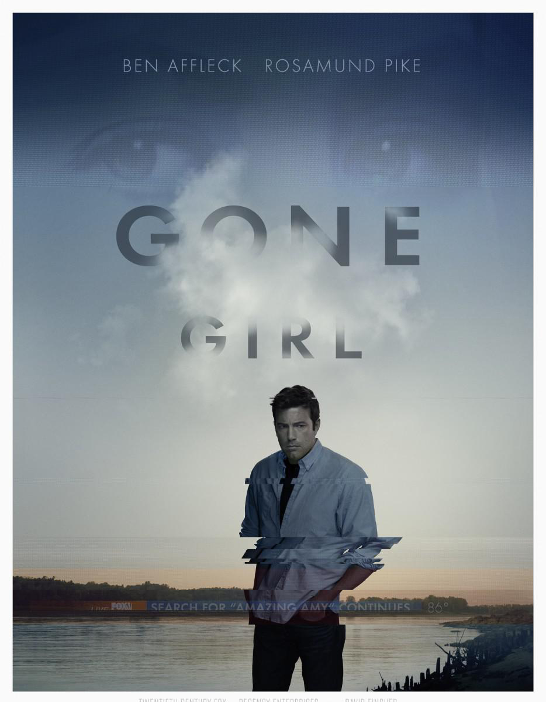

5: The Gift
Ratings : 🌟 7.0
Genre : MysteryDramaThriller
Release Date : 7 August 2015
Watch-Time : 1h 48min.
Director : Joel Edgerton
Starring : Jason Bateman, Rebecca Hall, Joel Edgerton
Box-Office : $59 million
Storyline:
Simon and Robyn are a young married couple whose life is going just as planned until a chance encounter with an acquaintance from Simon's high school sends their world into a harrowing tailspin. Simon doesn't recognize Gordo at first, but after a series of uninvited encounters and mysterious gifts prove troubling, a horrifying secret from the past is uncovered after more than 20 years. As Robyn learns the unsettling truth about what happened between Simon and Gordo, she starts to question: how well do we really know the people closest to us, and are past bygones ever really bygones?
4: Point Break
Ratings : 🌟 5.4
Genre : ActionAdventureThriller
Release Date : 25 December 2015
Watch-Time : 1h 54min.
Director : Ericson Core
Starring : Édgar Ramírez, Luke Bracey, Teresa Palmer, Delroy Lindo, Ray Winstone
Box-Office : $133.7 million
Storyline:
A young FBI agent infiltrates an extraordinary team of extreme sports athletes he suspects of masterminding a string of unprecedented, sophisticated corporate heists. Deep undercover, and with his life in danger, he strives to prove these athletes are the architects of the mind-boggling crimes that are devastating the world's financial markets.
3.1: You Were Never Really Here

Ratings : 🌟 6.8
Genre : CrimeMysteryThriller
Release Date : 6 April 2018
Watch-Time : 1h 29min.
Director : Lynne Ramsay
Starring : Joaquin Phoenix, Judith Roberts, Ekaterina Samsonov, John Doman, Alex Manette, Dante Pereira-Olson, Alessandro Nivola
Box-Office : $10.9 million
Storyline:
Balancing between feverish dreamlike hallucinations of a tormented past and a grim disoriented reality, the grizzled Joe--a traumatised Gulf War veteran and now an unflinching hired gun who lives with his frail elderly mother--has just finished yet another successful job. With an infernal reputation of being a brutal man of results, the specialised in recovering missing teens enforcer will embark on a blood-drenched rescue mission, when Nina, the innocent 13-year-old daughter of an ambitious New York senator, never returns home. But amidst half-baked leads and a desperate desire to shake off his shoulders the heavy burden of a personal hell, Joe's frenzied plummet into the depths of Tartarus is inevitable, and every step Joe takes to flee the pain, brings him closer to the horrors of insanity. In the end, what is real, and what is a dream? Can there be a new chapter in Joe's life when he keeps running around in circles?
3.2: Looper
Ratings : 🌟 7.4
Genre : ActionThrillerSci-Fi
Release Date : 28 September 2012
Watch-Time : 1h 53min.
Director : Rian Johnson
Starring : Bruce Willis, Joseph Gordon-Levitt, Emily Blunt, Paul Dano, Noah Segan, Piper Perabo, Jeff Daniels
Box-Office : $176.5 million
Storyline:
Joe is classified as a "looper", a job in which his employers use time travel to send men from the future to be killed into the past, where Joe can properly dispose of their bodies. However, to tie up loose ends and erase the evidence of his ever being a looper, Joe knows that one day his future self will be sent back for him to kill. When this day comes, Joe's future self is prepared and escapes, and the two men struggle separately in the past trying to evade capture and attempting to fulfill their own personal agendas.
2.1: Searching
Ratings : 🌟 7.6
Genre : DramaMysteryThriller
Release Date : 31 August 2018
Watch-Time : 1h 42min.
Director : Aneesh Chaganty
Starring : John Cho, Debra Messing, Joseph Lee
Box-Office : $75.5 million
Storyline:
After David Kim (John Cho)'s 16-year-old daughter goes missing, a local investigation is opened and a detective is assigned to the case. But 37 hours later and without a single lead, David decides to search the one place no one has looked yet, where all secrets are kept today: his daughter's laptop. In a hyper-modern thriller told via the technology devices we use every day to communicate, David must trace his daughter's digital footprints before she disappears forever.
2.2: Changeling

Ratings : 🌟 7.7
Genre : BiographyCrimeDramaThriller
Release Date : 31 October 2008
Watch-Time : 2h 21min.
Director : Clint Eastwood
Starring : Angelina Jolie, Colm Feore, Amy Ryan
Box-Office : $113.4 million
Storyline:
Los Angeles, 1928. Single mother Christine Collins (Angelina Jolie) returns from work to find her nine-year-old son Walter (Gattlin Griffith) gone. She calls the L.A.P.D. to initiate a search. Five months later, a boy is found in Illinois who fits the description, and he says he's her son. To fanfare and photos, the L.A.P.D. reunite mother and son, but she insists he's not her boy. The cops dismiss her as either a liar or hysterical. When she joins a minister in his public criticism of the Police, they in turn use government power to silence and intimidate her. Meanwhile, a cop goes to a dilapidated ranch to find a Canadian lad who's without legal status; the youth tells a grisly tale. There's redress for murder; is there redress for abuse of power?
1.1: Nightcrawler
Ratings : 🌟 7.9
Genre : CrimeDramaThriller
Release Date : 31 October 2014
Watch-Time : 1h 57min.
Director : Dan Gilroy
Starring : Jake Gyllenhaal, Rene Russo, Riz Ahmed, Bill Paxton
Box-Office : $50.3 million
Storyline:
NIGHTCRAWLER is a thriller set in the nocturnal underbelly of contemporary Los Angeles. Jake Gyllenhaal stars as Lou Bloom, a driven young man desperate for work who discovers the high-speed world of L.A. crime journalism. Finding a group of freelance camera crews who film crashes, fires, murder and other mayhem, Lou muscles into the cut-throat, dangerous realm of nightcrawling - where each police siren wail equals a possible windfall and victims are converted into dollars and cents. Aided by Rene Russo as Nina, a veteran of the blood-sport that is local TV news, Lou blurs the line between observer and participant to become the star of his own story.
1.2: Gone Girl
Ratings : 🌟 8.1
Genre : MysteryDramaThriller
Release Date : 3 October 2014
Watch-Time : 2h 29min.
Director : David Fincher
Starring : Ben Affleck, Rosamund Pike, Neil Patrick Harris, Tyler Perry, Carrie Coon, Kim Dickens
Box-Office : $369.3 million
Storyline:
On the occasion of his fifth wedding anniversary, Nick Dunne reports that his wife, Amy, has gone missing. Under pressure from the police and a growing media frenzy, Nick's portrait of a blissful union begins to crumble. Soon his lies, deceits and strange behavior have everyone asking the same dark question: Did Nick Dunne kill his wife?